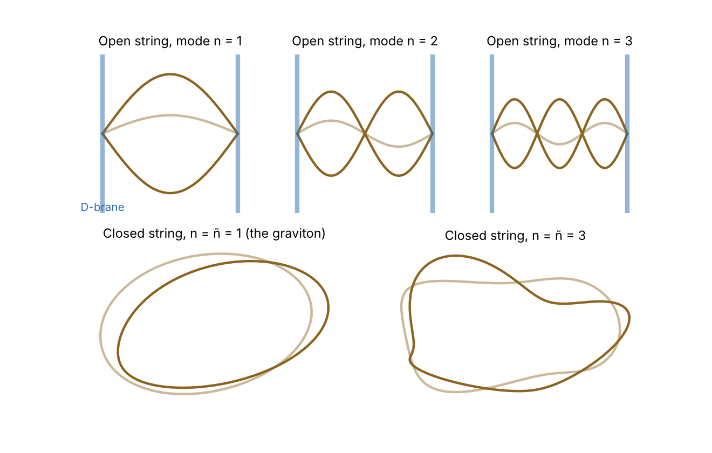
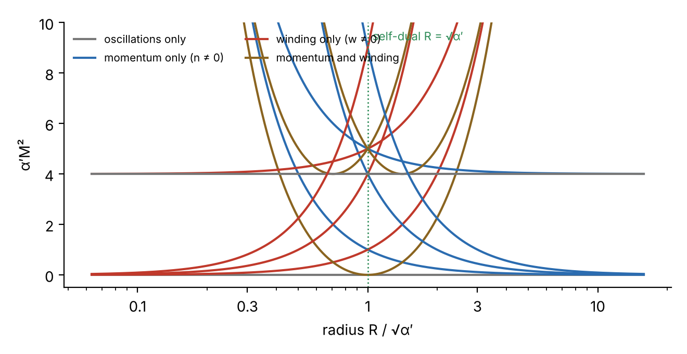
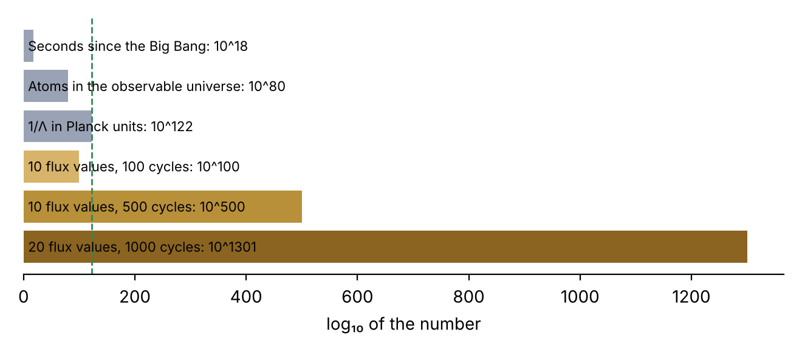

The problem: gravity and quantum mechanics
Physics today rests on two pillars. The Standard Model describes electromagnetism and the strong and weak nuclear forces as quantum fields, and it has been tested to as many as twelve significant figures. General relativity describes gravity as the curvature of spacetime, and it has passed every test from Mercury's perihelion to gravitational waves. But the two theories do not fit together.
If you try to treat gravity as a quantum field in the same way as the other forces, with a particle – the graviton – as the carrier, things go wrong at high energies. Feynman diagrams with loops contain divergent integrals, and for gravity the infinities cannot be removed by renormalisation, because Newton's constant has dimensions. Every new order requires new, unknown constants. The theory loses its predictive power at the Planck scale:
This is where string theory comes in. Its basic idea is that the problem arises because we treat particles as points.
From point to string
A point particle traces out a worldline in spacetime. When two particles interact, their worldlines meet at a point – and it is exactly at these sharp points that the infinities arise. A string instead traces out a worldsheet. When two closed strings merge, it does not happen at any particular point: the worldsheet is smooth everywhere, like a pair of trousers. The interaction is "smeared out", and the integrals become finite.
The dynamics of the string follow from the simplest possible principle: the action is proportional to the area of the worldsheet (the Nambu–Goto action), just as the action of a point particle is proportional to the length of its worldline.
Here $T$ is the string tension, and $\alpha'$ ("alpha prime") is the theory's only free parameter. The characteristic length of the string is $\ell_s = \sqrt{\alpha'}$. In most models it is close to the Planck length – about twenty orders of magnitude smaller than a proton.
Notes as particles
A guitar string can vibrate in its fundamental and in its overtones. A fundamental string can do the same, and each vibrational state behaves as a particular particle. The higher the mode, the more energy, and therefore the greater the mass. For an open string (with free ends) in the simplest, bosonic string theory,
where $N$ is the total excitation level. For $N = 1$, $M = 0$: a massless particle with spin 1 – exactly like the photon. For a closed string (a loop) there are waves running each way round, and their levels $N$ and $\tilde N$ must be equal:
For $N = \tilde N = 1$, $M = 0$ again, but now the spin is 2. A massless spin-2 particle necessarily interacts like gravity. String theory therefore contains the graviton without anyone having put it in. That discovery in 1974 turned a failed theory of the nuclear forces into a candidate theory of everything.
On the other hand, at $N = 0$ the bosonic string has a state with $M^2 < 0$, a tachyon, which signals an instability. It disappears in superstring theory, where the strings also carry fermionic degrees of freedom.

Why 26 or 10 dimensions?
String theory chooses for itself how many dimensions spacetime has. The reason is the zero-point energy. Each vibrational mode $n$ of the string is a quantum harmonic oscillator with zero-point energy $\tfrac12\hbar\omega_n$, and there is one for each of the $D-2$ transverse directions. The sum over all modes diverges, but regularised with the Riemann zeta function it gives
The theory is only Lorentz invariant if the first excited state is massless, and that requires $a = 1$. Hence $D = 26$. In superstring theory the fermions contribute half-integer modes, and the condition becomes $(D-2)/16 = \tfrac12$, so $D = 10$.
We see only four dimensions. The remaining six must therefore be compactified – curled up so small that we cannot detect them. The idea is older than string theory: in the 1920s Theodor Kaluza and Oskar Klein showed that a fifth, rolled-up dimension can give rise to electromagnetism by itself. In string theory the six extra dimensions typically have the shape of a Calabi–Yau manifold, and its geometry determines which particles and forces we see in four dimensions.
T-duality: a small circle is a large circle
Let one dimension be rolled up into a circle of radius $R$. A closed string can now have momentum around the circle, quantised as $n/R$ – just like a point particle. But the string can also wind $w$ times around the circle, and then its length costs energy proportional to $wR$. The mass spectrum becomes
The formula is unchanged if you swap $R \leftrightarrow \alpha'/R$ and at the same time $n \leftrightarrow w$. A string on a circle of radius $R$ cannot be distinguished from a string on a circle of radius $\alpha'/R$. So there is a smallest meaningful length, $\sqrt{\alpha'}$: making the circle smaller is the same as making it larger. At the self-dual radius $R = \sqrt{\alpha'}$ itself, some of the winding states become massless, and extra symmetry appears.

A short history
| Year | Event |
|---|---|
| 1968 | Gabriele Veneziano finds a formula describing the scattering of strongly interacting particles (mesons). |
| 1969–70 | Yoichiro Nambu, Holger Bech Nielsen (Niels Bohr Institute) and Leonard Susskind independently realise that Veneziano's formula describes vibrating strings. |
| 1973 | Quantum chromodynamics (QCD) wins as the theory of the strong nuclear force, and strings become obsolete. The same year, Holger Bech Nielsen and Poul Olesen show that field lines in certain field theories can bunch together into string-like vortices. |
| 1974 | Joël Scherk and John Schwarz – and independently Tamiaki Yoneya – propose that the massless spin-2 state is the graviton. String theory becomes a theory of gravity. |
| 1984 | Michael Green and John Schwarz show that the anomalies in superstring theory cancel. "The first superstring revolution". |
| 1995 | Edward Witten shows that the five superstring theories are limits of a single 11-dimensional M-theory. Joseph Polchinski introduces D-branes. "The second revolution". |
| 1996 | Andrew Strominger and Cumrun Vafa derive the Bekenstein–Hawking entropy of certain black holes by counting string states. |
| 1997 | Juan Maldacena formulates the AdS/CFT correspondence. |
| 2000–05 | Bousso–Polchinski, KKLT and Susskind: string theory has an enormous landscape of possible vacua. The anthropic debate begins. |
| 2006 | Lee Smolin's The Trouble with Physics and Peter Woit's Not Even Wrong are published. The criticism reaches the general public. |
| 2010– | The LHC finds the Higgs boson (2012), but no supersymmetric particles. |
What string theory has achieved
A quantum theory with gravity
String theory is the only known framework in which the graviton appears automatically, and in which perturbative calculations of quantum gravitational effects appear to be finite order by order.
Black hole entropy
Bekenstein and Hawking showed that a black hole has entropy $S = k_B A/(4\ell_P^2)$. Strominger and Vafa recovered the formula exactly, including the factor 1/4, by counting microstates of D-branes – for a special class of black holes.
Holography and AdS/CFT
Maldacena's correspondence states that a theory of gravity in anti-de Sitter space is equivalent to a quantum field theory without gravity on its boundary. It is used today to calculate properties of strongly coupled systems, for example the viscosity of the quark–gluon plasma, where the ratio $\eta/s \approx \hbar/(4\pi k_B)$ is close to the measured value.
Mathematics
Mirror symmetry between Calabi–Yau spaces solved old problems in enumerative geometry. Richard Borcherds used vertex algebras from string theory in his proof of "monstrous moonshine" (Fields Medal 1998), and Edward Witten himself received the Fields Medal in 1990 as the first physicist to do so.
The criticism
The criticism of string theory does not come from people who do not understand it. It comes from physicists such as Sheldon Glashow, Lee Smolin, Peter Woit, Sabine Hossenfelder, George Ellis and Joseph Silk – and already in the 1980s from Richard Feynman. The main points are:
1. No testable predictions
After fifty years, string theory has not predicted a single experimental result that has subsequently been confirmed. This is mainly because of the energy scale. The effects of strings only become clear at energies around the Planck energy, and that is out of reach:
A ring accelerator with the LHC's magnets (8.3 T) has radius $r = E/(0.3\,B)$ with $E$ in GeV and $r$ in metres. To give each beam half the Planck energy, the radius would have to be about $2.4\cdot10^{18}$ m – roughly 260 light-years.
Supporters reply that the theory does not need to be tested directly at the Planck scale. It could leave traces at lower energies: supersymmetric particles, millimetre-sized extra dimensions, cosmic strings or patterns in the cosmic microwave background. But none of these traces has been found, and none of them is specific to string theory.
2. Supersymmetry has not shown up
Most realistic string models require supersymmetry – a symmetry between bosons and fermions that gives every known particle a heavier partner. Many expected the partners to appear at the LHC, because supersymmetry at the TeV scale would also explain why the Higgs mass is not pulled up towards the Planck scale. So far none has been found. The limits now lie around 2 TeV for gluinos and around 1 TeV for stop quarks. String theory does not forbid supersymmetry being broken at much higher energy – but then the natural explanation disappears, and the theory becomes even harder to test.
3. The landscape: too many solutions
The biggest objection concerns predictive power even in principle. The equations do not have one solution but an astronomical number – one for each way of compactifying the six extra dimensions and filling them with fields. Each vacuum gives different low-energy physics: different particles, different coupling constants, a different cosmological constant. The most quoted number is $10^{500}$, but some estimates are far larger. See the next section.
4. Background dependence
The great lesson of general relativity is that the geometry of spacetime is dynamical. But string theory is (apart from AdS/CFT) formulated as strings moving in a fixed background spacetime. Lee Smolin and the proponents of loop quantum gravity argue that a fundamental theory cannot presuppose the spacetime it is meant to explain. There is no complete, non-perturbative definition of M-theory.
5. The sociology
Smolin and Woit also criticised the culture of the field: that in the 1990s and 2000s string theory dominated hiring in theoretical high-energy physics in the USA, so that alternative approaches struggled to gain a foothold. In Lost in Math (2018) Sabine Hossenfelder argues that, in the absence of data, physicists have started using beauty and "naturalness" as a guide – and that it was precisely the naturalness argument that failed at the LHC.
The landscape and the anthropic argument
Where does the number $10^{500}$ come from? In a typical compactification, the Calabi–Yau space has hundreds of independent "holes" (cycles), and a quantised flux can thread each of them. With $N$ cycles, and about $K$ possible values of each flux, the number of vacua is roughly
This is the argument of Bousso and Polchinski from 2000. It is also used positively: the cosmological constant $\Lambda$ is about $10^{-122}$ in Planck units. If the values are spread roughly evenly, about one vacuum in $10^{122}$ will have such a small $\Lambda$. With $10^{500}$ vacua there are still $10^{378}$ of them. Combined with Steven Weinberg's argument from 1987 – that galaxies, and therefore observers, can only form if $\Lambda$ is small – this explains why we see a small value. That is the anthropic argument.

For the critics, this is exactly where the theory stops being physics. If the theory can accommodate almost any low-energy physics, it predicts nothing. The "explanation" of $\Lambda$ rests on a multiverse of other universes that we can never observe. Even among string theorists the argument is contested: quoting Churchill, David Gross has urged his colleagues never to give up looking for a genuine explanation. For the proponents, it is an honest expression of the possibility that some constants of nature are environmental, like the Earth's distance from the Sun.
Since 2005 Cumrun Vafa and others have developed the swampland: conjectures about which low-energy theories cannot come from string theory. One of them says that stable de Sitter vacua with positive $\Lambda$ may not exist in string theory at all. That would mean that dark energy cannot be a strictly constant quantity. Measurements from DESI in 2024–25 have hinted that dark energy may change over time, and some string theorists have seen this as a possible sign in favour of these conjectures. The result is not yet conclusive.
The defence
Joseph Polchinski, Brian Greene, Edward Witten and many others have answered the criticism. The main arguments are:
- The only candidate. It has proved extremely hard to construct a consistent quantum theory of gravity. String theory is the only known approach that combines gravity with the other forces and automatically contains the graviton.
- Internal consistency as a test. The anomaly cancellation of 1984, the entropy of black holes and AdS/CFT were not built into the theory – they turned up and fitted. Such unexpected connections, the supporters say, are a sign that the theory is on to something.
- Usefulness beyond itself. AdS/CFT is used in nuclear and condensed-matter physics, and string theory has given mathematics several deep results.
- Patience. Atomic theory was disputed for over a hundred years before it was confirmed. Gravitational waves were predicted in 1916 and measured in 2015. That a theory has not yet been tested is not the same as it being untestable.
Polchinski reviewed both Smolin's and Woit's books in 2007, acknowledging that the criticism had hit real problems, but arguing that they underestimated how much the theory had actually taught physicists.
Is it science?
The debate about string theory is also a debate about what science is. According to Karl Popper, a theory is scientific only if it can be falsified – and string theory in its present form hardly can be. In 2014 George Ellis and Joseph Silk wrote in Nature that the integrity of physics was under threat if theories began to be accepted without any possibility of experimental testing. The philosopher Richard Dawid, on the other hand, has argued that one can have rational confidence in a theory on the basis of non-empirical arguments: that no alternatives have been found, that the theory unexpectedly explains things it was not designed to explain, and that similar theories have proved right in the past.
Imre Lakatos's concept of research programmes perhaps gives a more fruitful picture: a programme is progressive as long as it leads to new, surprising results, and degenerating when it only defends itself with auxiliary hypotheses. Whether string theory today is one or the other is exactly what the two sides disagree about. See also the page The scientific method does not exist.
Status
String theory is still a large and active research field, but its role has changed. Many string theorists today work less on finding the vacuum that describes our world, and more on holography, quantum information, black holes and mathematical physics – subjects where the tools of string theory have proved useful. At the same time, alternative approaches such as loop quantum gravity, asymptotic safety and causal dynamical triangulations have become more visible.
None of the approaches has yet produced a confirmed prediction about quantum gravity. How gravity and quantum mechanics fit together is still one of the great open questions in physics.
Further reading
In favour
- Brian Greene: The Elegant Universe (1999)
- Leonard Susskind: The Cosmic Landscape (2005)
- Barton Zwiebach: A First Course in String Theory (2004, 2nd ed. 2009) – an undergraduate textbook
- Joseph Polchinski: String Theory I–II (1998)
- Richard Dawid: String Theory and the Scientific Method (2013)
Critical
- Lee Smolin: The Trouble with Physics (2006)
- Peter Woit: Not Even Wrong (2006)
- Jim Baggott: Farewell to Reality (2013)
- Sabine Hossenfelder: Lost in Math (2018)
- George Ellis and Joseph Silk: "Defend the integrity of physics", Nature 516 (2014)
See also Nothingness on emergent spacetime and loop quantum gravity, and Schrödinger's cat.